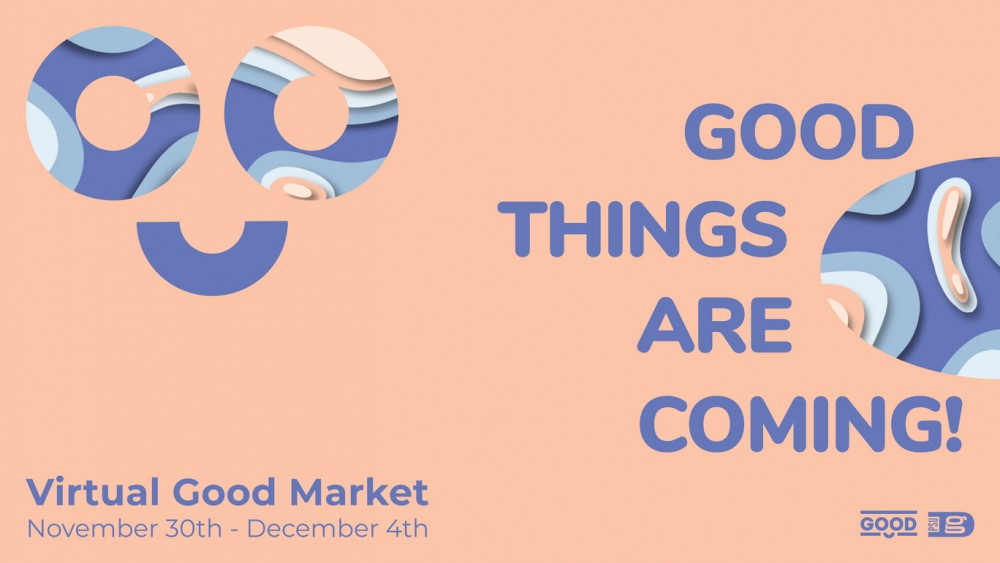
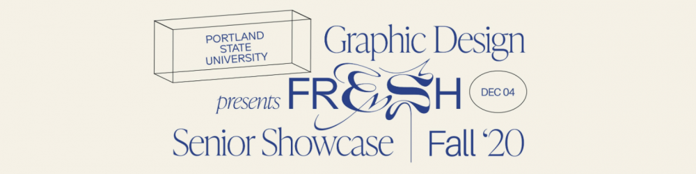
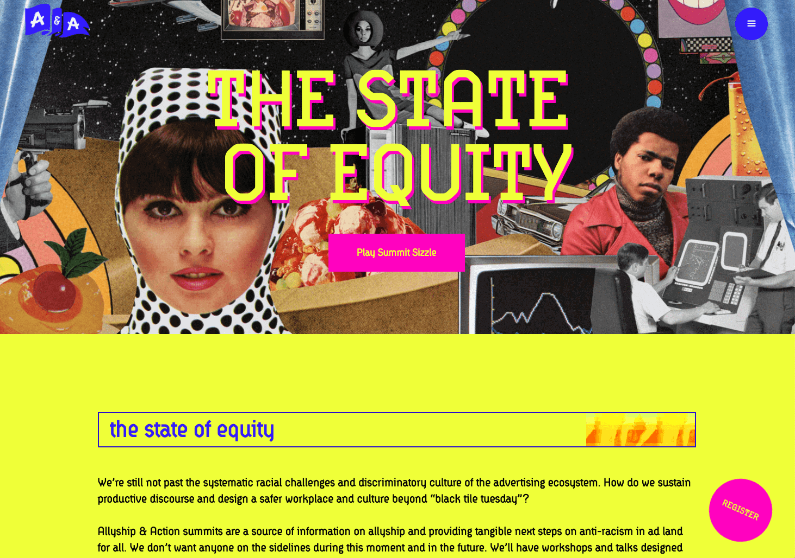

Beyond!
FreeCodeCamp.org has... you guessed it! A free code camp! Actually they have several paths to choose from. A few front-end ones are: responsive web design, front-end libraries. They also have a fantastic YouTube channel chock full of videos.
I just discovered Coder Coder. She focuses on front-end HTML and CSS
I really love skillshare for classes on front-end web development and design, UX, UI, and branding. It's a monthly subscription that costs $15 a month. They have some free classes too
p5.js, the javascript version of the processing library that is taught in the creative coding class is a fun way to add animations to your websites.
You can buy your own custom domain and hook it up to github pages! Yep! For like less than $10 a year, you can have a free website. Here's how to set it up if you register with namecheap. Here's how to set it up if you register through google domains.
LearnWebCode has a Learn HTML, Learn CSS, and Learn JQuery and Javascript playlist on his YouTube channel.
Week 10
Nov 30th - Dec 6th LAST WEEK OF CLASSES
Basecamp page for the week. Highlights: Finish up homeworks and projects! Do your interaction report. Do you peer reviews. Fill out your self evaluations.

Virtual Good: Nov 30 - Dec 4

In a time when the world has become still, PSUGD wants to bring a fresh perspective into the virtual world we are living in.
20 students are graduating from the program this term and are full of energy and a passion to bring movement and humanity back into our daily lives.
Please accept our invitation to come and meet these Fresh students – they are eager to show you all of their hard work and to receive your design expertise insights.
A Fresh Perspective
PSU’s Graphic Design Senior Showcase
Dec 4th, 202012pm – 8pm PSTA
virtual event to connect.
-->
Week 9
Nov 23rd - Nov 29th
Basecamp page for the week. Highlights: add meta tags to your projects and do the audio homework.
Write: Design journal prompt: This one's about "why." Read this article (try to pretend it's not a cheezy article about business success). Spend some time thinking about why you are pursuing a career in design. Really dig down, do the 7 "whys" tool in the article. OR If that's too challenging right now, consider people in your life or people who've inspired you. Think about what drives them, what their "why" is. Why did they work so hard to do XYZ, was it from past experiences they had, was it because they saw a need they were called to fill? What's their deeper "why?" Ask them if you know them, or look up some biographical information and try to figure it out. Write about either you or your inspiration.
Add an inspiring site of the week. This one's not a site, but I love the idea of a vector illustration a day and I like that she did them in series'. https://medium.com/the-100-day-project/100-days-of-vector-illustration-6f2f10209b0b
Week 8
Nov 16th - Nov 22nd
Basecamp link
Show And Tell!
Week 7
Nov 9th - Nov 15th
basecamp
Show And Tell! November 12th: Dinesh Dave
Week 6
Nov 2nd - Nov 8th
Basecamp
Animation Resources
Animation Student Examples of Previous Project 3 Posters
Show And Tell! November 5th: Ali Godil/ House of Gul
Week 5
Oct 26th - Nov 1st - MIDTERM
Watch: CSS Zen Garden: Layering background images (15 mins)
My video on the CSS Animate It library
My video on animated text demo
My video on an image carousel library called slick.js
A simple button animation (the video weirds out in the middle but comes back)
Animating SVGS
Homework: Watch Omoju Miller talk and write response paper
Read: Duckett Javascript&JQuery chapters 4, 5, and 6. Click "code" button for download link on this github repo.
Write:
Show And Tell! October 29th: Marisol Ortega
My personal site inspiration of the week:

Allyship and Action - State of Equity Conference
Week 4
Oct 19th - 25th
TO DO Keep working on Project 1 If you haven't finished design comps or wireframes, make sure to get to those. Start coding project 1. On Wednesday we'll do more code demos in class and I may do some breakout rooms to help people who haven't been able to get a 1 on 1 yet. Add these to your css file in project 1: body { margin: 0;} * {box-model: border-box
Make: Homework
Read Chapter 7 (forms) of Duckett HTML and CSS and create a contact form on your homepage (or a separate contact.html page if you like). Use https://getsimpleform.com/ to make it actually useful! Due Monday Oct 26. Post a link to your form in homework 4 Homework 4 - Contact Form! Due 10/26 - DES 341 FA20 but also, add a link to your homepage!
Write: journal prompt
Read this short article https://hbr.org/2019/08/learning-is-supposed-to-feel-uncomfortable and this one on resistance https://www.mindful.org/the-neuroscience-of-resistance-and-how-to-overcome-it/. Considering these articles, make a list of 5 things to keep you going when you feel resistance or discomfort.
Add a site inspiration of the week
Watch: Thirty Minute flexbox video by LearnWebCode on Youtube: https://www.youtube.com/watch?v=k32voqQhODc
Read:
Duckett Chapter 7(forms), 8(tables), 14(boxes) Think: Think about Project 2 and what you might want to do for it. OPTIONAL BUT HELPFUL Videos that are helpful: Everyone's starter code: I worked on elements of man of your sites. You're welcome to pilfer each other's code to help you get parts working on your own sites.
live: https://psuinteractivemedia.com/student-code/
code: https://github.com/alannarisse/psuinteractivemedia/tree/master/student-code
live: https://psuintercactivemedia.com/in-class-demos/button-anim
code: https://github.com/alannarisse/psuinteractivemedia/tree/master/in-class-demos/button-anim/index.html
Book some time with me https://calendly.com/arisse/psu-office-hours?month=2020-10
Show And Tell! October 22nd: The Beauty Shop / Visible

All take place via the magical zoom link: psu.gd/show-and-tell
Week 3
Oct 12th - 18th
We'll be focusing on getting those design comps done, and getting started on basic html layouts for Project 1.
Watch:
Make: Design Comps
Read: Duckett HTML&CSS Links and Images chapters 4 & 5 (pps 75-124), chapter 12
Write:
Show And Tell! October 15th: Tsilli Pines from Instrument
Week 2
Oct 5th - 11th
Watch:
Part 1: HTML+CSS Adding Clickable Image to Homepage
Part 2: HTML+CSS adding google fonts to your homepage
Part 3: HTML+CSS Background images using unsplash and tinypng
Part 4: HTML+CSS - simple multi-column layouts with flexbox
And only if needed:
Part 0: HTML+CSS - Start Here! All the set up info you need for the interactive media classes
Part 1: Space! ...in HTML and CSS
Part 2: Space!... In HTML and CSS
Figma Part 1: Creating Wireframes (TBD)
Make: Homework 2: Project One Wireframes
Optional: Wired25 response paper
Read: Duckett HTML&CSS Text and Lists chapters 2 & 3 (pps 37-70), chapter 11 color (pps 246-260)
Write: Design Journal Prompt for week two: What are you planning to do for project 1? What content do you plan to show? How will you make each page unique while maintaining a cohesive design across the project? How will your color palette, imagery, and typography choice complement your subject matter?
Project One Intro: previous class projects
Inspiring site of the week: Aware app This is an app that a student in the web development program at my other job did. It's simple but powerful. It uses Cognitive Behavior Therapy to walk you throuhg a stressful event and help you to reframe it.
Show And Tell! October 7th: Alumni Talks with a variety of former PSUGD students all doing a variety of things!
Week 1
Sept 28 - Oct 4
Watch:
Make: This week's homework is to create a single narrative site. Four or five images and some links to take you through a series of pages. See examples below for ideas.
Read: Duckett HTML&CSS: Intro and chapter 1 (pps 3 - 36), chapter 10 Introducing CSS (pps 226-244)
Write: What do you hope to achieve in this class by the end of the term? Are there special projects or technologies you’d like to see covered by the end of the term? Is there a site (or two) that gives you butterflies in your stomach? What is it?
Inspiration for the week